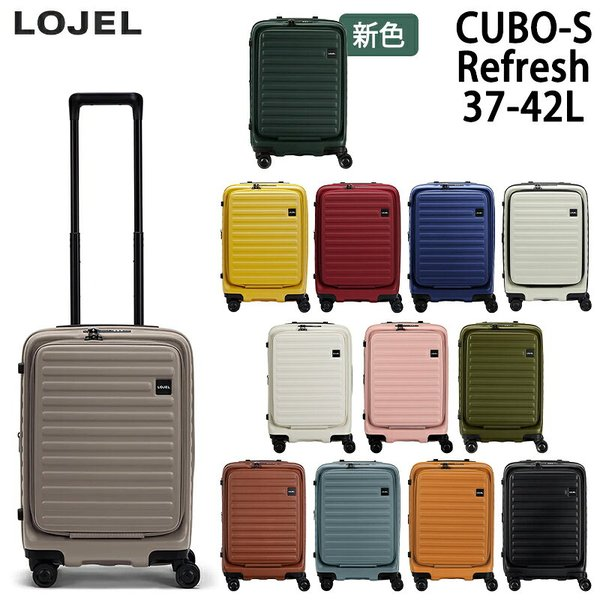
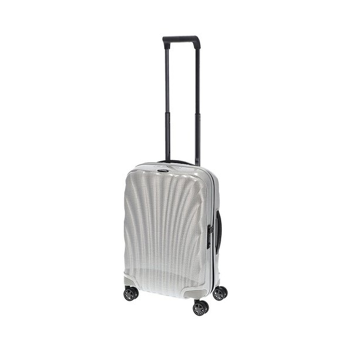
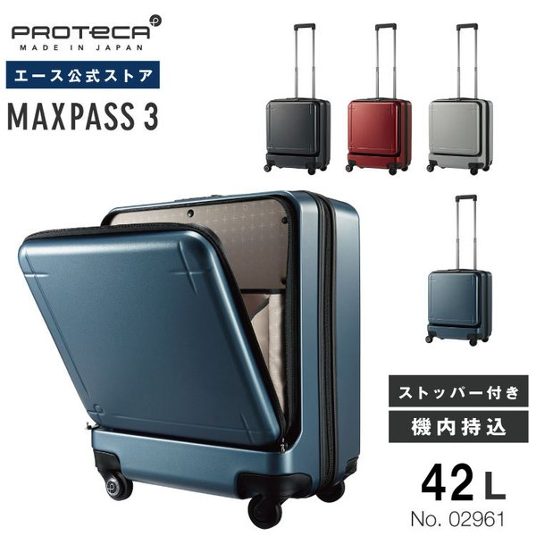
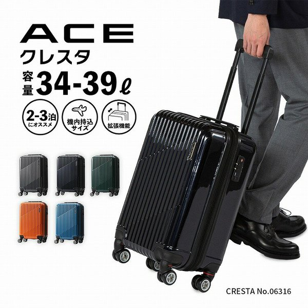
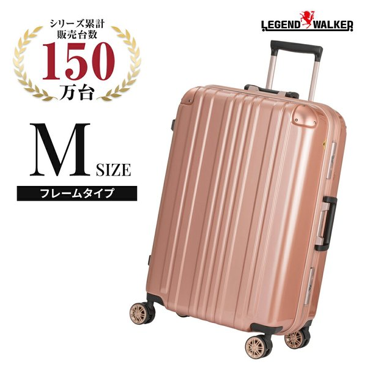
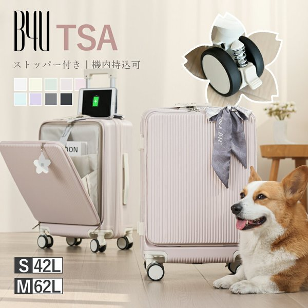
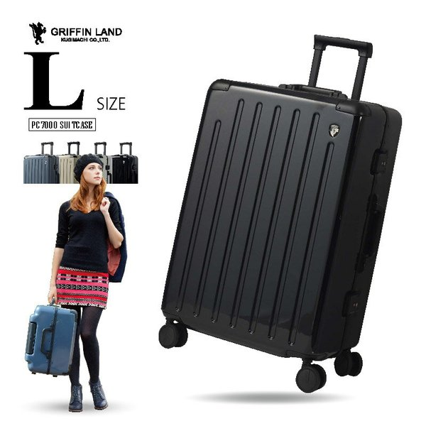
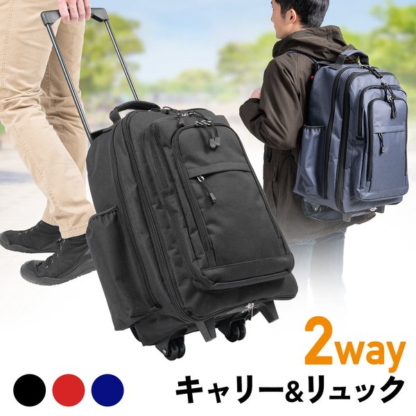
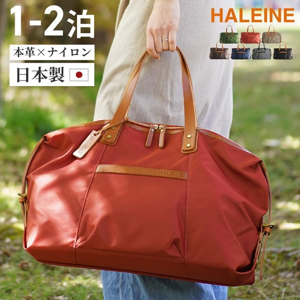
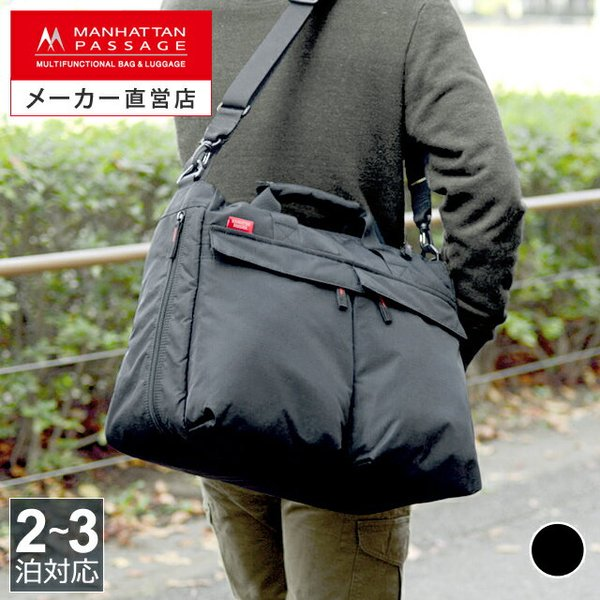

【2026年冬・帰省と旅行】スーツケース・キャリーケース・ボストンバッグおすすめ10選｜機内持ち込みから5泊以上の大型まで実売価格で比較
年末年始の帰省や旅行は、荷物の量が読めないまま出発しがちです。着替えとお土産で、帰りは行きより重くなる。だからスーツケースは「行き」より「帰り」の容量で選ぶと、失敗が少なくなります。
選ぶ軸は4つです。まず容量。1〜2泊なら機内持ち込みのSサイズ、5泊以上ならMかL。迷ったら年間の泊数で決めてください。次に開け方。フロントオープンは狭い部屋でも荷物を出し入れしやすく、ファスナー式は軽く、フレーム式は開閉がしっかりしています。移動手段も大事で、電車中心なら静音キャスターとストッパー付き、階段が多いなら軽さを優先。最後に保証。修理対応が国内かどうかは、長く使うほど効いてきます。
本記事では、楽天市場で人気・高評価のスーツケースと旅行バッグ10選を、実売価格とレビュー評価つきで写真付き紹介します。
- おすすめ10選 スペック・特徴比較表
- BEST 1｜CUBO-S Refresh 37（42）L フロントオープン キャリー
- BEST 2｜C-Lite シーライト 55cm 36-42L スピナー
- BEST 3｜マックスパス3 フロントオープン 42L（02961）
- BEST 4｜クレスタ 機内持ち込み 34-39L（06316）
- BEST 5｜5122-62 フレームタイプ Mサイズ
- BEST 6｜フロントオープン 機内持ち込み キャリーケース（S/Mサイズ）
- BEST 7｜PC7000 Lサイズ（5〜7泊用）
- BEST 8｜2WAY キャリーリュック（機内持ち込み・2泊3日）
- BEST 9｜ナイロン×栃木レザー 2WAY ボストンバッグ
- BEST 10｜#2340 エキスパンダブル ボストンバッグ（24〜26L）
- 【読者負担0円】買わなくても得する無料サービス
- まとめ：スーツケースと旅行バッグ10選の選び方
| 順位 | 商品名 | ブランド | 最大の特徴・おすすめ理由 | 総合評価 |
|---|---|---|---|---|
| BEST 1 | CUBO-S Refresh 37（42）L フロントオープン キャリー | ロジェール（LOJEL） | 前面が開くフロントオープン | 4.71 |
| BEST 2 | C-Lite シーライト 55cm 36-42L スピナー | サムソナイト（Samsonite） | 軽量なカーウ素材 | 4.78 |
| BEST 3 | マックスパス3 フロントオープン 42L（02961） | プロテカ（PROTECA） | フロントオープンでPCを出し入れしやすい | 4.60 |
| BEST 4 | クレスタ 機内持ち込み 34-39L（06316） | エース（ACE） | 34L→39Lに拡張できる | 4.60 |
| BEST 5 | 5122-62 フレームタイプ Mサイズ | レジェンドウォーカー（LEGEND WALKER） | 5〜7泊分の容量 | 4.46 |
| BEST 6 | フロントオープン 機内持ち込み キャリーケース（S/Mサイズ） | B4U | フロントオープンで出し入れが楽 | 4.47 |
| BEST 7 | PC7000 Lサイズ（5〜7泊用） | グリフィンランド（GRIFFIN LAND） | 5〜7泊の大容量 | 4.44 |
| BEST 8 | 2WAY キャリーリュック（機内持ち込み・2泊3日） | サンワサプライ | キャリーとリュックの2WAY | 4.35 |
| BEST 9 | ナイロン×栃木レザー 2WAY ボストンバッグ | HALEINE（アレーヌ） | ナイロン×栃木レザーの日本製 | 4.57 |
| BEST 10 | #2340 エキスパンダブル ボストンバッグ（24〜26L） | マンハッタンパッセージ（MANHATTAN PASSAGE） | 24〜26Lで2〜3泊向き | 4.66 |
CUBO-S Refresh 37（42）L フロントオープン キャリー

香港発のラゲッジブランド、ロジェールの機内持ち込みサイズです。上ではなく前面が開くフロントオープン式なので、狭いホテルの部屋や新幹線の座席でも荷物を出し入れしやすいのが最大の利点。37Lから42Lまで拡張でき、帰りのお土産で容量が足りなくなる心配も少なくて済みます。本体はリサイクルポリカーボネート製で重量3.4kg、10年保証付き。長く使う前提で選べる一台です。楽天市場での実売価格は約55,000円（2026年11月時点）。
- 前面が開くフロントオープン
- 37L→42Lに拡張できる
- 10年保証付き
- 55,000円と高価で、拡張時は機内持ち込みサイズを超える
C-Lite シーライト 55cm 36-42L スピナー

サムソナイトの軽量シリーズ「C-Lite」の機内持ち込みモデルです。独自素材カーウで成形したシェルは薄くて軽く、55cmで36L、拡張すると42Lになります。4輪スピナーなので、空港の長い移動でも押しやすさが違います。軽さを保ったまま荷物の重さを増やせるのが、このシリーズの価値。修理体制のしっかりしたブランドを、長く使う前提で選びたい人に向いています。楽天市場での実売価格は約36,999円（2026年11月時点）。
- 軽量なカーウ素材
- 36L→42Lに拡張できる
- 4輪スピナーで移動が楽
- 36,999円と価格は高めで、レビューは74件
マックスパス3 フロントオープン 42L（02961）

エースの国内生産ブランド、プロテカのフロントオープンモデルです。42Lで機内持ち込みに対応し、前面のポケットはノートPCを出し入れしやすい配置。キャスターにはストッパーが付いていて、電車の中で荷物が転がりません。日本製で、修理も国内で受けられます。価格は張りますが、出張の回数が多い人ほど、この作りは長く効きます。楽天市場での実売価格は約79,200円（2026年11月時点）。
- フロントオープンでPCを出し入れしやすい
- キャスターストッパー付き
- 日本製で修理対応
- 79,200円と高額で、レビューは15件と少ない
クレスタ 機内持ち込み 34-39L（06316）

エースの「クレスタ」は、ファスナー式で34L、拡張すると39Lになる機内持ち込みサイズです。ダイヤル式のTSロックで鍵を持ち歩かずに済み、ビジネスバッグのような落ち着いた見た目。ファスナー式はフレーム式より軽く、荷物を詰め込みやすいのが利点です。1〜2泊の出張や、週末の帰省にちょうどいい容量です。楽天市場での実売価格は約19,800円（2026年11月時点）。
- 34L→39Lに拡張できる
- ダイヤル式TSロック
- シンプルな黒でビジネスにも合う
- 19,800円で、ファスナー式ゆえフレーム式ほどの堅牢感はない
5122-62 フレームタイプ Mサイズ

国産ブランド、レジェンドウォーカーのフレームタイプMサイズです。5〜7泊分の容量があり、TSAロックとダブルキャスターを備えています。フレーム式は開閉がしっかりしていて、ファスナー式のように中身を詰めすぎて閉まらなくなることがありません。長期の帰省や家族旅行で預け荷物として使うなら、このサイズが扱いやすいです。レビュー6,936件で12,030円と、価格もこなれています。楽天市場での実売価格は約12,030円（2026年11月時点）。
- 5〜7泊分の容量
- フレーム式で開閉がしっかり
- レビュー6,936件の実績
- Mサイズは機内持ち込みできないため、預け入れ前提になる
フロントオープン 機内持ち込み キャリーケース（S/Mサイズ）

B4Uの機内持ち込みキャリーケースです。フロントオープンで、ストッパー・USB充電ポート・カップホルダーまで付いています。Sサイズは2泊3日、Mサイズは3泊4日が目安。9,980円で、レビューは9,555件です。多機能なぶん重量はありますが、空港でスマホを充電しながら移動できるのは、実際に使うと便利です。楽天市場での実売価格は約9,980円（2026年11月時点）。
- フロントオープンで出し入れが楽
- USBポートとカップホルダー付き
- レビュー9,555件
- 多機能なぶん、シンプルなモデルより本体は重め
PC7000 Lサイズ（5〜7泊用）

グリフィンランドのLサイズ、5〜7泊用の大型スーツケースです。ポリカーボネートのフレーム式で、大容量ながら軽量に作られています。Lサイズは海外旅行や長期出張で預け荷物が増える人向け。レビューは26,411件で、18,980円と大型にしては手頃です。まず1台を大きく、という人にはこのサイズが向いています。楽天市場での実売価格は約18,980円（2026年11月時点）。
- 5〜7泊の大容量
- PC素材のフレーム式
- レビュー26,411件
- Lサイズは大きく重いので、階段や狭い通路では扱いに慣れが要る
2WAY キャリーリュック（機内持ち込み・2泊3日）

サンワサプライの2WAYキャリーバッグです。キャスター付きのキャリーとしても、リュックとしても背負えます。布製で軽く、2泊3日向け。機内持ち込みサイズなので、LCCの手荷物だけで済ませたいときに便利です。キャスターを出せば引いて運べ、段差では背負える。1つで2通り使えるのは、旅先で移動手段が変わる場面に強いです。楽天市場での実売価格は約6,480円（2026年11月時点）。
- キャリーとリュックの2WAY
- 機内持ち込みサイズ
- 布製で軽い
- ソフト素材なので、壊れ物は入れ方に工夫が要る
ナイロン×栃木レザー 2WAY ボストンバッグ

HALEINEのナイロン×レザーのボストンバッグです。栃木レザーとたつのレザーを組み合わせ、日本製で仕上げています。A4が入る大きさで、2WAYのショルダーにも対応。ナイロンなので雨に強く、レザーの持ち手で手提げにも見えます。旅行にも通勤にも使えるデザインで、泊まりの出張が多い人に向いています。楽天市場での実売価格は約15,400円（2026年11月時点）。
- ナイロン×栃木レザーの日本製
- A4が入る大きさ
- 2WAYで肩掛けできる
- 15,400円と、ナイロンバッグとしては価格が高め
#2340 エキスパンダブル ボストンバッグ（24〜26L）

マンハッタンパッセージの2〜3泊用ボストンバッグです。24〜26Lで、ファスナーを開けると容量が増えるエキスパンダブル仕様。ナイロン生地で軽く、メーカー直営の#2340は定番の形です。ビジネスにも旅行にも合う黒で、肩掛けベルトも付きます。荷物が増えがちな2泊の出張で、帰りに容量を足せるのは助かります。楽天市場での実売価格は約20,900円（2026年11月時点）。
- 24〜26Lで2〜3泊向き
- 拡張できるエキスパンダブル
- メーカー直営の定番モデル
- 20,900円と価格は高めで、PC専用の収納はない
この記事の商品を買う前に、まずは無料で得する選択肢をチェック。どれも登録・利用は0円で、無料期間中に解約すれば料金はかかりません。読みたい雑誌がある人、ポイントを貯めたい人、アンケートなら気軽という人、それぞれに合うものを選べます。
初回31日無料・無料期間中に解約すれば0円 → 楽天ポイントモール｜登録無料で毎日ポイ活
買い物なしでもポイントが貯まる無料サービス → 楽天インサイト｜アンケートに答えてポイント
登録無料・すきま時間のアンケートで貯まる → 楽天カード｜年会費永年無料
新規発行・年会費ずっと0円 →
4つのサービスの違いと使い分けは「出費0円で得する！買わずにポイントが貯まる無料サービス厳選4選」でまとめています。
💡 まとめ：スーツケースと旅行バッグ10選の選び方
スーツケースは、年間の泊数と移動手段で選ぶと失敗しません。1〜2泊の出張や週末の帰省なら、機内持ち込みのSサイズ。フロントオープンは狭いホテルでも出し入れが楽で、ストッパー付きなら電車の中で転がりません。5泊以上の帰省や家族旅行ならMかLを。フレーム式は開閉がしっかりしていて、預け荷物に向いています。予算を抑えるなら、レビュー数の多いB4Uやレジェンドウォーカー、グリフィンランド。長く使いたいなら、サムソナイトやプロテカの保証と修理体制を選んでください。ボストンバッグは、2泊までなら拡張できるナイロン製が扱いやすく、荷物が増える帰省の帰り道にも安心です。
楽天市場では「5と0のつく日」や「お買い物マラソン」などのキャンペーンに合わせて購入すると、ポイント還元が最大化してお得に手に入ります。ぜひチェックしてみてくださいね。